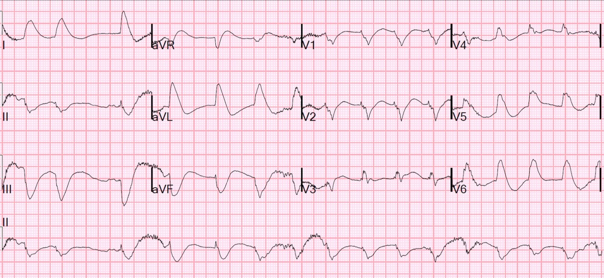
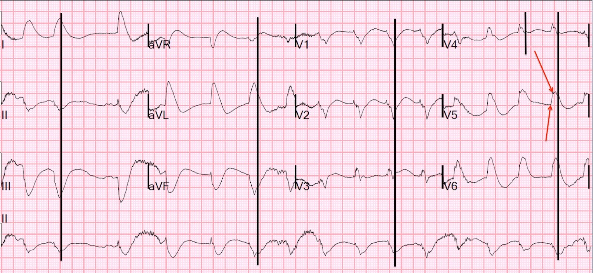
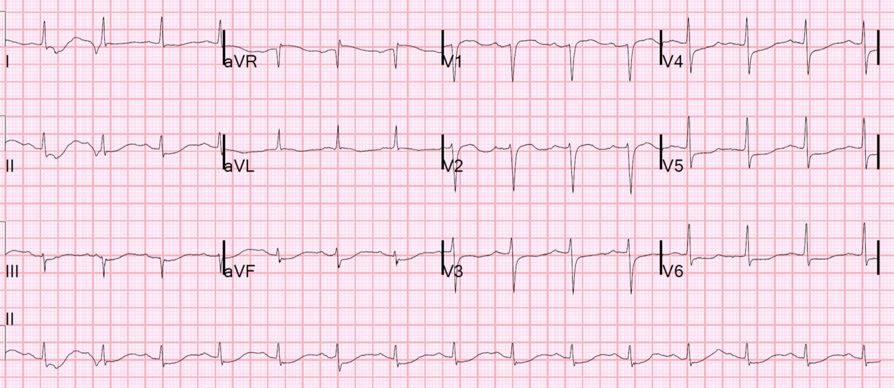

25/04/2018 — Ngừng tim — có phải STEMI không?
Bản dịch tiếng Việt của bài "Cardiac Arrest — Is it STEMI?" – Dr. Smith’s ECG Blog. Giữ nguyên toàn bộ 3 hình ảnh của bản gốc.
Một bệnh nhân nam cuối tuổi trung niên ngã gục khi đang đi bộ và được người xung quanh hồi sinh tim phổi ngay lập tức. Bệnh nhân đạt tái lập tuần hoàn tự nhiên (ROSC) ngay tại cửa khoa cấp cứu (ED), 30 phút sau khi ngừng tim.
Hồi sinh tim phổi được thực hiện hiệu quả đến mức bệnh nhân bắt đầu làm theo y lệnh ngay khi đến viện. Vì sao lại hiệu quả như vậy? Vì họ đã dùng thiết bị ngưỡng hít vào (inspiratory threshold device), ITD (ResQPod) và ResQPump.
Xem tại đây để cập nhật những điều mới nhất về hồi sinh tim phổi, một lĩnh vực đang phát triển nhanh: Bài giảng của Keith Lurie, gồm cả những cập nhật mới nhất về hồi sinh tim phổi tư thế nâng đầu (head-up CPR).
Đây là điện tâm đồ 12 chuyển đạo đầu tiên của bệnh nhân tại khoa cấp cứu, với pH 7,09, pCO2 69 và bicarbonat 19. K là 2,8 (kali thấp thường gặp sau hồi sức do dùng nhiều epinephrine ngoại sinh):


Đây có phải LBBB không?
Không.
LBBB phải có pha lên chậm (“nhánh nội điện” – intrinsicoid deflection) tới đỉnh sóng R ở các chuyển đạo bên, kéo dài ít nhất 60 ms. Ở đây pha lên tương đối nhanh, khoảng 40 ms (xem các mũi tên đỏ ở hình bên dưới, đánh dấu điểm khởi đầu và đỉnh sóng R ở chuyển đạo V5).
Đây có phải QRS rộng không?
Có, nhưng tôi tin rằng nó không rộng như thoạt nhìn.
Trong phiên bản điện tâm đồ có chú thích (bên dưới), tôi đặt một vạch đen ngắn ở V4 tại chỗ mà tôi tin là QRS kết thúc.
Đây là một QRS trông rất rộng vì phần cuối của nó bị ST chênh lên xóa lấp.
Đây là ST chênh lên dạng “vây cá mập” (shark fin).
Chúng còn được gọi là “sóng R khổng lồ” (Giant R-waves): JE Madias.
Toàn văn, kèm hình: https://drive.google.com/open?id=1fCpHey_vILU9jNld6a4oBtxQbML8Z88k.
Đây là phiên bản có chú thích với các vạch và mũi tên:


Vạch đen ngắn ở V4 đánh dấu chỗ tôi tin là điểm kết thúc của QRS.
Như vậy, thời gian QRS khoảng 140 ms. Rất dễ tưởng rằng nó là 230 ms. –Sau đó tôi kẻ một vạch đen dài từ chính điểm đó kéo xuống tới chuyển đạo II.
–Sau đó tôi kẻ vạch đen dài ấy từ các điểm tương ứng trên các phức bộ khác của chuyển đạo II, lên tới tất cả các chuyển đạo còn lại.
Giờ đây, giả sử ước lượng điểm kết thúc QRS của tôi là đúng:
1. Có thể thấy ST chênh lên đồng hướng ở I, aVL, V3, V5 và V6.
2. Có thể thấy ST chênh xuống soi gương (STD) đồng hướng ở II, III, aVF
3. Cũng có STD ở V1 và V2. Trong bất kỳ nhịp thất nào, kể cả PVC, ST chênh lên đồng hướng gợi ý thiếu máu cục bộ dưới thượng tâm mạc (STEMI)
để xem một ví dụ khác về ST chênh lên dốc xuống như vậy, hãy xem ca này: Wide Complex Tachycardia; It’s really sinus, RBBB + LAFB, and massive ST elevation (Nhịp nhanh QRS rộng; thực ra là nhịp xoang, RBBB + LAFB và ST chênh lên rất nhiều)
Các quyết định xử trí
Chúng tôi đang tuyển bệnh nhân vào một nghiên cứu tên là “ACCESS” (Mã định danh ClinicalTrials.gov: NCT03119571). Đây là một thử nghiệm ngẫu nhiên về chụp mạch vành/PCI sớm cho nạn nhân ngừng tim không có “STEMI” hoặc “tương đương STEMI”. (Câu hỏi nghiên cứu là: những bệnh nhân có nhịp sốc được mà không có STEMI có cần kích hoạt phòng thông tim cấp cứu không?)
Vì vậy, việc đọc điện tâm đồ có ý nghĩa quyết định đối với việc bệnh nhân này sẽ được:
1) chụp mạch vành ngay lập tức như một bệnh nhân STEMI, hoặc
2) phân ngẫu nhiên vào nhóm chụp mạch vành sớm hoặc nhóm chụp mạch vành muộn hơn, tùy theo chỉ định từ các dữ liệu khác.
Nếu bạn tin rằng:
A) Đây chỉ đơn thuần là một điện tâm đồ sau ngừng tim với QRS rất rộng và không có ST chênh lên hay chênh xuống
Thì bệnh nhân được phân ngẫu nhiên và không mặc nhiên được chụp mạch vành ngay lập tức.
B) QRS thực ra ngắn hơn nhiều và chỉ trông rộng do ST chênh lên và chênh xuống xóa lấp phần cuối của QRS
Thì bạn kích hoạt phòng thông tim và không đưa bệnh nhân vào thử nghiệm ngẫu nhiên này.
Tôi tin chắc rằng đó là ST chênh lên và chênh xuống.
Chúng tôi đã kích hoạt phòng thông tim dựa trên điện tâm đồ này, dù biết rằng tình trạng thiếu máu cục bộ dưới thượng tâm mạc này có thể chỉ đơn thuần là hậu quả của riêng ngừng tim.
Điện tâm đồ ngay sau hồi sức ngừng tim
Bất kỳ điện tâm đồ nào ghi ngay sau ngừng tim đều có thể bất thường rất dữ dội. Trong 30 phút ngừng tim, ngay cả khi không có nhồi máu cơ tim cấp, hoặc thậm chí không có bất kỳ bệnh mạch vành nào, vẫn có thể có thiếu máu cục bộ nặng do tình trạng lưu lượng thấp của ngừng tim, cũng như các biến đổi do nhiễm toan. (Cung lượng tim và huyết áp trong khi ép ngực hồi sinh tim phổi chỉ bằng một phần nhỏ so với bình thường.)
Nếu có các tổn thương mạch vành cố định, dòng chảy phía sau chỗ hẹp đó có thể cực kỳ kém, và thiếu máu cục bộ có thể khu trú.
Vì vậy, luôn phải ghi thêm một điện tâm đồ khác sau khi bệnh nhân ổn định. Chúng tôi ghi điện tâm đồ này 25 phút sau đó:


Điện tâm đồ hạ kali máu điển hình.
Còn một ít STE tồn lưu ở aVL và STD soi gương ở các chuyển đạo dưới
Bạn nghĩ sao?
Ba khả năng:
1. QRS thực sự đã kéo dài rất nhiều, và hiện tại cũng như trước đó không hề có thiếu máu cục bộ khu trú
2. Đã có huyết khối, nhiều khả năng ở LM hoặc LAD, và nó đã tái tưới máu tự phát (tự tiêu huyết khối – autolysis)
3. Có một chỗ hẹp cố định ở LM hoặc LAD. Trong lúc ngừng tim và ngay sau đó, đã có thiếu máu cục bộ sâu sắc ở vùng cấp máu đó, dẫn đến ST chênh lên (một STEMI típ 2).
Thêm bệnh sử được làm rõ:
Gần đây bệnh nhân bị đau thắt ngực khi gắng sức. Bệnh nhân đã làm nghiệm pháp gắng sức vài ngày trước đó với kết quả dương tính rõ rệt, và đã được hẹn chụp mạch vành vào ngày hôm sau.
Điều này gợi ý có một chỗ hẹp cố định.
Điều gì đã xảy ra?
1. Có thể mảng xơ vữa gây hẹp đó đã nứt vỡ và hình thành huyết khối.
2. Có thể gắng sức khi đi bộ đã đủ gây thiếu máu cục bộ do gắng sức rồi dẫn tới rung thất.
Bệnh nhân được đưa vào phòng thông tim:
Phát hiện hẹp 95% LAD đoạn gần. Tổn thương có vẻ không phải cấp tính (không có mảng xơ vữa loét và không có huyết khối). Tổn thương được giảm xuống còn 0% sau can thiệp và đặt stent.
Troponin I đỉnh = 19 ng/mL (ở STEMI, troponin I lớn hơn 10 ng/mL trong khoảng 70% số ca)
Siêu âm tim chính thức
Kích thước và độ dày thất trái bình thường.
Chức năng tâm thu thất trái giảm nhẹ với EF ước tính
là 45%.
Có giảm động thành trước đoạn giữa.
Có vẻ như Khả năng 3 là đúng.
Kết luận
Đây là một STEMI típ II do hẹp cố định ở LAD; trong bối cảnh lưu lượng rất thấp của hồi sinh tim phổi, chỗ hẹp này đã gây giảm tưới máu nặng cho thành trước, QRS rộng, cùng ST chênh lên và chênh xuống phù hợp với STEMI. Ngừng tim là do thiếu máu cục bộ khi gắng sức trên nền một chỗ hẹp LAD rất khít, cố định, không có huyết khối.
Tuy vậy, chẩn đoán ra viện lại là “NonSTEMI”.
Nhìn lại, bệnh nhân này lẽ ra đã có thể được phân ngẫu nhiên trong thử nghiệm ACCESS. Bệnh nhân không cần can thiệp ngay lập tức, dù thực tế đã được can thiệp.
Những điểm cần học:
1. Điều tối quan trọng là phải tìm được điểm kết thúc của QRS trước khi kết luận rằng không có STE hay STD.
2. Khi có một chỗ hẹp cố định, gắng sức có thể dẫn đến thiếu máu cục bộ và rung thất. Nghiệm pháp gắng sức luôn được thực hiện khi có sẵn phương tiện hồi sức!
3. Lưu lượng thấp trong ngừng tim có thể gây thiếu máu cục bộ cơ tim nặng, đặc biệt khi có hẹp mạch vành cố định
4. Điện tâm đồ ngay sau ngừng tim thường rất bất thường. Hãy chờ 15 phút sau khi ổn định rồi ghi một điện tâm đồ khác
5. Chúng ta chưa biết liệu mọi bệnh nhân ngừng tim do nhịp sốc được có cần chụp mạch vành cấp cứu hay không. Thiên hướng của tôi là chuyển họ đi chụp, nhưng mục tiêu của thử nghiệm ACCESS chính là tìm ra câu trả lời.